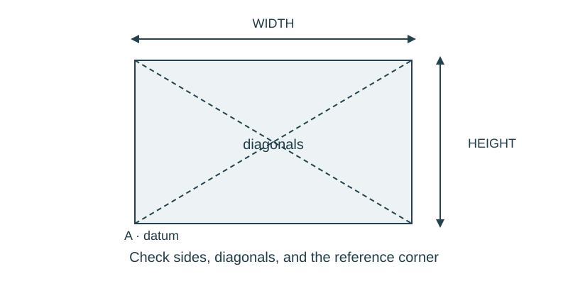

Job 15 · Brace a frame
A paper frame that resists racking better after a documented revision.
110 minutes • Tape measure + pocket notebook • Name: __________________ Date: __________
Materials: Folded paper strips, tape, paper fasteners if available, notebooks, ruler/tape.

Brief · 12 min
- Push the top of a loose rectangle sideways in a sketch. Which dimension changes first, and why might a diagonal help?
- Set up a dated notebook spread: sketch and readings on the left; calculation, decision, test, and revision on the right. Mark small sketches NTS unless drawn to a chosen scale.
- Work in pairs and rotate roles. Each student keeps an individual notebook and performs a tool action and a calculation.
Measure · 18 min
- Make a model frame 6 in wide and 8 in tall from stiff folded strips; use the same corner connections for both trials.
- Record both diagonals before pushing and mark a reference outline on paper.
- Choose a repeatable gentle displacement test: move the top corner 1 in sideways, release, and measure the remaining offset.
Plan · 20 min
- Draw the unbraced and proposed braced frames; mark load direction and connections.
- Calculate brace centerline length and add a stated overlap at both ends.
- Plan to compare remaining offset after the same initial displacement.
Worked example
A 6 × 8 in frame needs a corner-to-corner brace in a zero-thickness centerline model. Brace length = √(6² + 8²). 10 in between corner reference points; add measured attachment overlaps when making the actual strip.
Make · 28 min
- Test the unbraced frame gently; record residual offset.
- Add one diagonal brace with documented attachments. Repeat the same displacement test.
- Revise a weak connection and retest; do not claim the hand force was measured.
Test · 20 min
- The diagonal and attachment allowance are separately labeled.
- Before/after test conditions are comparable.
- Explanation mentions triangle geometry and connection behavior, using observed motion.
Explain · 12 min
- Complete the individual exit below before discussing answers.
- Add the test result, revision, and notebook page reference to your response. Use the notebook as evidence rather than retyping every page.
- Save the three selected responses and submit the lesson for teacher review. Show your physical work and notebook to the teacher. Clean up and return shared supplies.
Individual exit
A 9 × 12 in centerline rectangle needs a diagonal with 1 in attachment overlap at each end. Find brace blank length and explain why checking only the strip strength misses a possible failure.